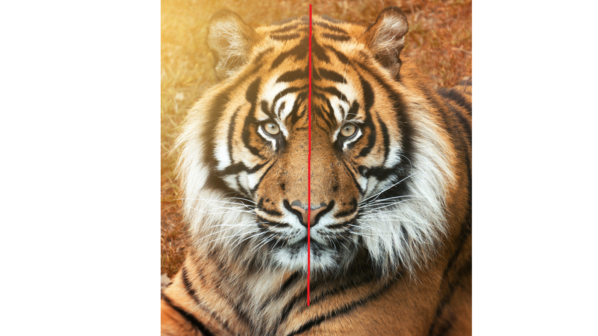

Schneeflocken sind z.b symmetrisch
Das ist eine Schnneflocke ohne Symmetrieachsen
und das ist eine Schneeflocke wo die Symmetrieachsen eingezeichnet wurden.

Jetzt kommen Tierbeispiele.Es werde Beispiele mit und ohne symmetreiachse gezeigt.
Tiger


Insekt

Vogel


Schmetterling

Danke fürs Lesen!